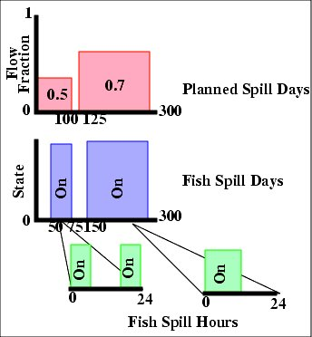

The separation of Planned Spill Days and Preferred Fish Spill Periods is an arbitrary convention that arose out of the 1989 Spill Agreements. In practice, the spill fraction should be indicated in the fish spill days and planned spill days should be eliminated; however, this is not the way the agreement was written.
The relationship between these spill operation variables is illustrated in the figure below. Planned Spill Days allocate a certain fraction of the river flow to be spilled during specified blocks of days as given in the water budget. Different fractions can be set for different blocks of days. Preferred Fish Spill Periods, however, indicate the actual days that spill will occur. The Fish Spill Hours specify blocks of time in each Fish Spill Day when spill occurs. In the example below, two Planned Spill Day periods are given. In the first period 50% of the daily averaged flow is planned to be spilled between Julian Day 0 and 100 and in the second period 70% spill is planned between day 125 and 300. These spills are computed as percentages of the average flow over the day. In this example, Fish Spill is identified for Julian Days 50 to 75 and 150 to 300. Spill will be 50% and 70%, respectively, of the daily averaged flows during these periods. The spill planned during days 125 and 150 will not occur. The Fish Spill Days period 150 to 300 has Fish Spill Hours 0 to 12.

Schematic of possible Planned Spill variables
Note. In the example above, the second spill period demands 70% of total river flow, but only allocates 12 hours per day to spill it in. This will produce a warning message from COMPASS since the model will be unable to achieve the 70% spill requirement by spilling only 50% of the time. Users should be careful to make their spill requests consistent with realistic dam operations.